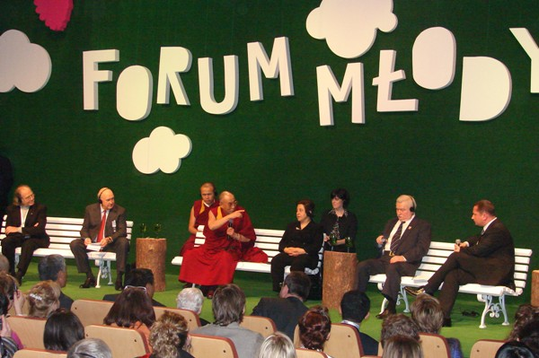
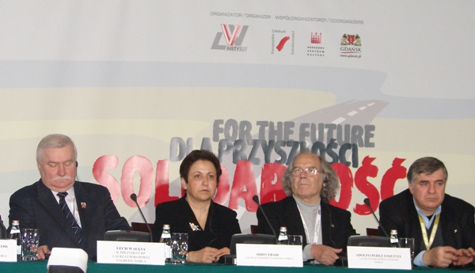

|
|
شیرین عبادی در سمینار بین المللی همبستگی برای آینده:حقوق بشر، چارچوبی برای دموکراسی است
سه شنبه19 آذر 1387
تغییر برای برابری: بیایید جامعه ای بسازیم که در آن از تعصب و استبداد خبری نباشد. بیایید به جوان ها یاد بدهیم که به جای برخورد تمدن ها به گفتگوی بین تمدن ها فکر کنند.
شیرین عبادی با بیان این سخنان در بین نمایندگانی از چهل کشور جهان که برای شرکت در سمینار "همبستگی برای آینده" به گدانسک لهستان آمده بودند، گفت:" بیایید هر جای دنیا که هستیم به حکومت هایمان بگوییم حداقل ده درصد از بودجه نظامی را کاهش دهید وصرف بهداشت و آموزش کنید و ببینید چه تغییری در جهان اتفاق می افتد."
عبادی در این سمینار که 6 دسامبر سال جاری به مناسبت بیست و پنجمین سالگرد اهدای صلح نوبل به "لخ ولسا" رئیس جمهور پیشین لهستان و از بنيانگذاران جنبش همبستگی اتحاديه های کارگری
برگزار شده بود، عدالت اجتماعی و دموکراسی را دو ارزش اساسی صلح پایدار خواند و افزود:" تعریف کلاسیک دموکراسی یعنی حکومت اکثریت. اما این تعریف باید عوض باشد و یادمان باشد بسیاری از دیکتاتورهای دنیا با دموکراسی به قدرت رسیدند ."

برنده حایزه صلح نوبل با تاکید بر اینکه پیروزی در انتخابات به معنای دموکراسی نیست، حقوق بشر را چارچوب دموکراسی عنوان کرد:"اکثریتی که در یک انتخابات آزاد به قدرت می رسد فقط در چارچوب ضوابط حقوق بشر می تواند حکومت کند. به عنوان مثل اکثریتی که در یک انتخابات آزاد به قدرت می رسد حق ندارد آزادی عقیده و بیان را از مردم بگیرد یا بهانه حفظ امنیت ملی ازادی های فردی را محدود بکند."
وی که تنها زن حاضر در بین سخنرانان این سمینار بین المللی بود، ادامه داد:"اکثریت به قدرت رسیده فقط در چارچوب حقوق بشر باید حکومت کند و حکومت ها مشروعیتشان را از آرای مردم و احترام به حقوق بشر می گیرند. "
به اعتقاد عبادی فقط در این صورت است که صلح در یک جامعه می تواند پایدار باشد.
وی با اظهار تاسف از اینکه در بسیاری از کشورهای جهان بودجه ای که برای کشتن و تفنگ خرج می شود بیشتر از بودجه ای است که خرج درمان و امورزش می شود و تعداد سرباز ها بیشتر از معلمین است، گفت:" در چنین دنیایی حرف از صلح زدن بی فایده است."

شیرین عبادی پیشنهاد داد برای اینکه بتوانیم عدالت اجتماعی بیشتری داشته باشیم هر کشور بودجه نظامی اش را کم کند به گونه ای که بودجه نظامی هیچ کشوری از مجموع بودجه اموزش و بهداشت ان کشور بیشتر نباشد.
وی در پاسخ به سوالی درباره وضعیت زنان در جهان و اینکه مسئله بی عدالتی به زنان مشکل بزرگی در جهان هست که بخواهیم با صدای بلندتر درباره آن حرف بزنیم، گفت:"زنان در هرجای دنیا که باشند حقوق برابر با یک مرد ندارند و تحت ستم اند و بر اساس نوع کشور و تمدنی که در آن هستند این ستم متفاوت است.مثلا در اروپا قانون حقوق برابر برای یک زن می شناسد اما همچنان در مسائل سیاسی و اجتماعی زنان عقب ترند و در کشور من زنها به نوعی دیگر تحت ستم اند و ما قوانین تبعیض آمیز و ضد زن زیاد داریم."